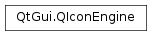

QIconEngine¶
Synopsis¶
Functions¶
- def
isNull() - def
scaledPixmap(size, mode, state, scale)
Virtual functions¶
- def
actualSize(size, mode, state) - def
addFile(fileName, size, mode, state) - def
addPixmap(pixmap, mode, state) - def
availableSizes([mode=QIcon.Normal[, state=QIcon.Off]]) - def
clone() - def
iconName() - def
key() - def
paint(painter, rect, mode, state) - def
pixmap(size, mode, state) - def
read(in) - def
write(out)
Detailed Description¶
The
PySide2.QtGui.QIconEngineclass provides an abstract base class forPySide2.QtGui.QIconrenderers.An icon engine provides the rendering functions for a
PySide2.QtGui.QIcon. Each icon has a corresponding icon engine that is responsible for drawing the icon with a requested size, mode and state.The icon is rendered by the
PySide2.QtGui.QIconEngine.paint()function, and the icon can additionally be obtained as a pixmap with thePySide2.QtGui.QIconEngine.pixmap()function (the default implementation simply usesPySide2.QtGui.QIconEngine.paint()to achieve this). ThePySide2.QtGui.QIconEngine.addPixmap()function can be used to add new pixmaps to the icon engine, and is used byPySide2.QtGui.QIconto add specialized custom pixmaps.The
PySide2.QtGui.QIconEngine.paint(),PySide2.QtGui.QIconEngine.pixmap(), andPySide2.QtGui.QIconEngine.addPixmap()functions are all virtual, and can therefore be reimplemented in subclasses ofPySide2.QtGui.QIconEngine.See also
QIconEnginePlugin
-
class
PySide2.QtGui.QIconEngine¶ -
class
PySide2.QtGui.QIconEngine(other) Parameters: other – PySide2.QtGui.QIconEngineConstructs the icon engine.
-
PySide2.QtGui.QIconEngine.IconEngineHook¶ These enum values are used for
PySide2.QtGui.QIconEngine.virtual_hook()to allow additional queries to icon engine without breaking binary compatibility.Constant Description QIconEngine.AvailableSizesHook Allows to query the sizes of the contained pixmaps for pixmap-based engines. The dataargument of thePySide2.QtGui.QIconEngine.virtual_hook()function is aAvailableSizesArgumentpointer that should be filled with icon sizes. Engines that work in terms of a scalable, vectorial format normally return an empty list.QIconEngine.IconNameHook Allows to query the name used to create the icon, for example when instantiating an icon using QIcon.fromTheme().QIconEngine.IsNullHook Allow to query if this engine represents a null icon. The dataargument of thePySide2.QtGui.QIconEngine.virtual_hook()is a pointer to a bool that can be set to true if the icon is null. This enum value was added in Qt 5.7.QIconEngine.ScaledPixmapHook Provides a way to get a pixmap that is scaled according to the given scale (typically equal to the device pixel ratio). The dataargument of thePySide2.QtGui.QIconEngine.virtual_hook()function is aScaledPixmapArgumentpointer that contains both the input and output arguments. This enum value was added in Qt 5.9.See also
PySide2.QtGui.QIconEngine.virtual_hook()
-
PySide2.QtGui.QIconEngine.actualSize(size, mode, state)¶ Parameters: - size –
PySide2.QtCore.QSize - mode –
PySide2.QtGui.QIcon.Mode - state –
PySide2.QtGui.QIcon.State
Return type: Returns the actual size of the icon the engine provides for the requested
size,modeandstate. The default implementation returns the givensize.- size –
-
PySide2.QtGui.QIconEngine.addFile(fileName, size, mode, state)¶ Parameters: - fileName – unicode
- size –
PySide2.QtCore.QSize - mode –
PySide2.QtGui.QIcon.Mode - state –
PySide2.QtGui.QIcon.State
Called by
QIcon.addFile(). Adds a specialized pixmap from the file with the givenfileName,size,modeandstate. The default pixmap-based engine stores any supplied file names, and it loads the pixmaps on demand instead of using scaled pixmaps if the size of a pixmap matches the size of icon requested. Custom icon engines that implement scalable vector formats are free to ignores any extra files.
-
PySide2.QtGui.QIconEngine.addPixmap(pixmap, mode, state)¶ Parameters: - pixmap –
PySide2.QtGui.QPixmap - mode –
PySide2.QtGui.QIcon.Mode - state –
PySide2.QtGui.QIcon.State
Called by
QIcon.addPixmap(). Adds a specializedpixmapfor the givenmodeandstate. The default pixmap-based engine stores any supplied pixmaps, and it uses them instead of scaled pixmaps if the size of a pixmap matches the size of icon requested. Custom icon engines that implement scalable vector formats are free to ignores any extra pixmaps.- pixmap –
-
PySide2.QtGui.QIconEngine.availableSizes([mode=QIcon.Normal[, state=QIcon.Off]])¶ Parameters: - mode –
PySide2.QtGui.QIcon.Mode - state –
PySide2.QtGui.QIcon.State
Return type: Returns sizes of all images that are contained in the engine for the specific
modeandstate.Note
This is a helper method and the actual work is done by the
PySide2.QtGui.QIconEngine.virtual_hook()method, hence this method depends on icon engine support and may not work with all icon engines.- mode –
-
PySide2.QtGui.QIconEngine.clone()¶ Return type: PySide2.QtGui.QIconEngineReimplement this method to return a clone of this icon engine.
-
PySide2.QtGui.QIconEngine.iconName()¶ Return type: unicode Returns the name used to create the engine, if available.
Note
This is a helper method and the actual work is done by the
PySide2.QtGui.QIconEngine.virtual_hook()method, hence this method depends on icon engine support and may not work with all icon engines.
-
PySide2.QtGui.QIconEngine.isNull()¶ Return type: PySide2.QtCore.boolReturns true if this icon engine represent a null
PySide2.QtGui.QIcon.Note
This is a helper method and the actual work is done by the
PySide2.QtGui.QIconEngine.virtual_hook()method, hence this method depends on icon engine support and may not work with all icon engines.
-
PySide2.QtGui.QIconEngine.key()¶ Return type: unicode Returns a key that identifies this icon engine.
-
PySide2.QtGui.QIconEngine.paint(painter, rect, mode, state)¶ Parameters: - painter –
PySide2.QtGui.QPainter - rect –
PySide2.QtCore.QRect - mode –
PySide2.QtGui.QIcon.Mode - state –
PySide2.QtGui.QIcon.State
Uses the given
painterto paint the icon with the requiredmodeandstateinto the rectanglerect.- painter –
-
PySide2.QtGui.QIconEngine.pixmap(size, mode, state)¶ Parameters: - size –
PySide2.QtCore.QSize - mode –
PySide2.QtGui.QIcon.Mode - state –
PySide2.QtGui.QIcon.State
Return type: Returns the icon as a pixmap with the required
size,mode, andstate. The default implementation creates a new pixmap and callsPySide2.QtGui.QIconEngine.paint()to fill it.- size –
-
PySide2.QtGui.QIconEngine.read(in)¶ Parameters: in – PySide2.QtCore.QDataStreamReturn type: PySide2.QtCore.boolReads icon engine contents from the
PySide2.QtCore.QDataStreamin. Returns true if the contents were read; otherwise returnsfalse.PySide2.QtGui.QIconEngine‘s default implementation always return false.
-
PySide2.QtGui.QIconEngine.scaledPixmap(size, mode, state, scale)¶ Parameters: - size –
PySide2.QtCore.QSize - mode –
PySide2.QtGui.QIcon.Mode - state –
PySide2.QtGui.QIcon.State - scale –
PySide2.QtCore.qreal
Return type: Returns a pixmap for the given
size,mode,stateandscale.The
scaleargument is typically equal to the device pixel ratio of the display.Note
This is a helper method and the actual work is done by the
PySide2.QtGui.QIconEngine.virtual_hook()method, hence this method depends on icon engine support and may not work with all icon engines.Note
Some engines may cast
scaleto an integer.See also
ScaledPixmapArgument- size –
-
PySide2.QtGui.QIconEngine.write(out)¶ Parameters: out – PySide2.QtCore.QDataStreamReturn type: PySide2.QtCore.boolWrites the contents of this engine to the
PySide2.QtCore.QDataStreamout. Returnstrueif the contents were written; otherwise returnsfalse.PySide2.QtGui.QIconEngine‘s default implementation always return false.
© 2018 The Qt Company Ltd. Documentation contributions included herein are the copyrights of their respective owners. The documentation provided herein is licensed under the terms of the GNU Free Documentation License version 1.3 as published by the Free Software Foundation. Qt and respective logos are trademarks of The Qt Company Ltd. in Finland and/or other countries worldwide. All other trademarks are property of their respective owners.